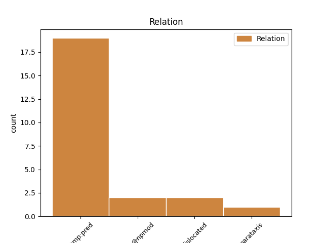
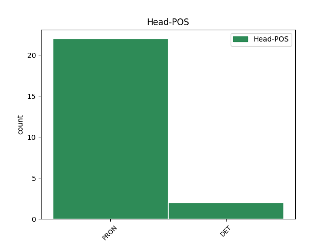
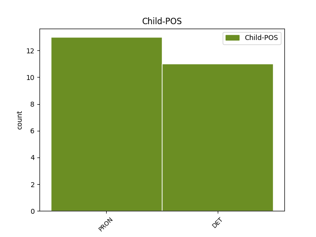

Distribution of features within this leaf



Agreement Rules sorted by frequency.
- When the dependent token is the predicative complements(comp:pred) of the head token,
1 ⲛ _ _ _ _ 0 _ _ _
2 ⲧ _ _ _ _ 0 _ _ _
3 ϩⲉ _ _ _ _ 0 _ _ _
4 ⲉⲧ _ _ _ _ 0 _ _ _
5 ⲥⲏϩ _ _ _ _ 0 _ _ _
6 ϫⲉ _ _ _ _ 0 _ _ _
7 ⲡ ⲡ DET ART Definite=Def|Gender=Masc|Number=Sing|PronType=Art 12 comp:pred _ _
8 ⲉⲧ _ _ _ _ 0 _ _ _
9 ⲙⲓϣⲉ _ _ _ _ 0 _ _ _
10 ⲉϫⲱ _ _ _ _ 0 _ _ _
11 ⲕ _ _ _ _ 0 _ _ _
12 ⲡⲉ ⲡⲉ PRON COP Gender=Masc|Number=Sing 0 _ _ _
13 ⲡⲉⲕ _ _ _ _ 0 _ _ _
14 ⲃⲟⲏⲑⲟⲥ _ _ _ _ 0 _ _ _
15 , _ _ _ _ 0 _ _ _
16 ⲁⲩⲱ _ _ _ _ 0 _ _ _
17 ⲧ _ _ _ _ 0 _ _ _
18 ⲥⲏϥⲉ _ _ _ _ 0 _ _ _
19 ⲡⲉ _ _ _ _ 0 _ _ _
20 ⲙ _ _ _ _ 0 _ _ _
21 ⲡⲉⲕ _ _ _ _ 0 _ _ _
22 ϣⲟⲩϣⲟⲩ _ _ _ _ 0 _ _ _
23 ⲁⲩⲱ _ _ _ _ 0 _ _ _
24 ⲡ _ _ _ _ 0 _ _ _
25 ⲉⲟⲟⲩ _ _ _ _ 0 _ _ _
26 ⲙ _ _ _ _ 0 _ _ _
27 ⲡⲉ _ _ _ _ 0 _ _ _
28 ⲥⲧⲉⲣⲉⲱⲙⲁ _ _ _ _ 0 _ _ _
29 · _ _ _ _ 0 _ _ _
1 ⲡ _ _ _ _ 0 _ _ _
2 ⲉⲧ _ _ _ _ 0 _ _ _
3 ⲛⲁ _ _ _ _ 0 _ _ _
4 ϣⲱⲡ _ _ _ _ 0 _ _ _
5 ⲉⲣⲟ _ _ _ _ 0 _ _ _
6 ϥ _ _ _ _ 0 _ _ _
7 ⲛ _ _ _ _ 0 _ _ _
8 ⲟⲩⲁ _ _ _ _ 0 _ _ _
9 ⲛ _ _ _ _ 0 _ _ _
10 ⲧ _ _ _ _ 0 _ _ _
11 ϩⲉ _ _ _ _ 0 _ _ _
12 ⲛ _ _ _ _ 0 _ _ _
13 ⲛⲓ _ _ _ _ 0 _ _ _
14 ϣⲏⲣⲉ _ _ _ _ 0 _ _ _
15 ϣⲏⲙ _ _ _ _ 0 _ _ _
16 ϩⲙ _ _ _ _ 0 _ _ _
17 ⲡⲁ _ _ _ _ 0 _ _ _
18 ⲣⲁⲛ _ _ _ _ 0 _ _ _
19 ⲁⲛⲟⲕ _ _ _ _ 0 _ _ _
20 ⲡ _ _ _ _ 0 _ _ _
21 ⲉⲧ _ _ _ _ 0 _ _ _
22 ϥ _ _ _ _ 0 _ _ _
23 ⲛⲁ _ _ _ _ 0 _ _ _
24 ϣⲟⲡ _ _ _ _ 0 _ _ _
25 ⲧ _ _ _ _ 0 _ _ _
26 ⲉⲣⲟ _ _ _ _ 0 _ _ _
27 ϥ _ _ _ _ 0 _ _ _
28 . _ _ _ _ 0 _ _ _
29 ⲁⲩⲱ _ _ _ _ 0 _ _ _
30 ⲡ ⲡ DET ART Definite=Def|Gender=Masc|Number=Sing|PronType=Art 40 dislocated _ _
31 ⲉⲧ _ _ _ _ 0 _ _ _
32 ⲛⲁ _ _ _ _ 0 _ _ _
33 ϣⲟⲡ _ _ _ _ 0 _ _ _
34 ⲧ _ _ _ _ 0 _ _ _
35 ⲉⲣⲟ _ _ _ _ 0 _ _ _
36 ϥ _ _ _ _ 0 _ _ _
37 ⲛ _ _ _ _ 0 _ _ _
38 ⲁⲛⲟⲕ _ _ _ _ 0 _ _ _
39 ⲁⲛ _ _ _ _ 0 _ _ _
40 ⲡ ⲡⲉ PRON COP Gender=Masc|Number=Sing 0 _ _ _
41 ⲉⲧ _ _ _ _ 0 _ _ _
42 ϥ _ _ _ _ 0 _ _ _
43 ⲛⲁ _ _ _ _ 0 _ _ _
44 ϣⲟⲡ _ _ _ _ 0 _ _ _
45 ⲧ _ _ _ _ 0 _ _ _
46 ⲉⲣⲟ _ _ _ _ 0 _ _ _
47 ϥ _ _ _ _ 0 _ _ _
48 ⲁⲗⲗⲁ _ _ _ _ 0 _ _ _
49 ⲡ _ _ _ _ 0 _ _ _
50 ⲉⲛⲧ _ _ _ _ 0 _ _ _
51 ⲁ _ _ _ _ 0 _ _ _
52 ϥ _ _ _ _ 0 _ _ _
53 ⲧⲛⲛⲟⲟⲩ _ _ _ _ 0 _ _ _
54 ⲧ _ _ _ _ 0 _ _ _
55 . _ _ _ _ 0 _ _ _
1 ⲁⲩⲱ _ _ _ _ 0 _ _ _
2 ⲛⲧⲟϥ ⲛⲧⲟϥ PRON PPERI Definite=Def|Gender=Masc|Number=Sing|Person=3|PronType=Prs 3 udep@npmod _ Orig=ⲛ̄ⲧⲟϥ
3 ⲡ ⲡ DET ART Definite=Def|Gender=Masc|Number=Sing|PronType=Art 0 _ _ _
4 ⲉⲧ _ _ _ _ 0 _ _ _
5 ⲉⲣⲉ _ _ _ _ 0 _ _ _
6 ⲡ _ _ _ _ 0 _ _ _
7 ⲇⲓⲁⲃⲟⲗⲟⲥ _ _ _ _ 0 _ _ _
8 ⲛⲁ _ _ _ _ 0 _ _ _
9 ϭⲙϭⲟⲙ _ _ _ _ 0 _ _ _
10 ⲉⲣⲟ _ _ _ _ 0 _ _ _
11 ϥ _ _ _ _ 0 _ _ _
12 ϩⲛ _ _ _ _ 0 _ _ _
13 ⲛⲉϥ _ _ _ _ 0 _ _ _
14 ϩⲃⲏⲩⲉ _ _ _ _ 0 _ _ _
15 ⲙ _ _ _ _ 0 _ _ _
16 ⲙⲛⲧⲣⲉϥϩⲉⲧⲃⲯⲩⲭⲏ _ _ _ _ 0 _ _ _
17 · _ _ _ _ 0 _ _ _
1 ⲓⲏⲥⲟⲩⲥ _ _ _ _ 0 _ _ _
2 ⲡⲉ ⲡⲉ PRON COP Gender=Masc|Number=Sing 0 _ _ _
3 ⲛⲧ _ _ _ _ 0 _ _ _
4 ⲁ _ _ _ _ 0 _ _ _
5 ϥ _ _ _ _ 0 _ _ _
6 ϯ _ _ _ _ 0 _ _ _
7 ⲙ _ _ _ _ 0 _ _ _
8 ⲡⲉϥ _ _ _ _ 0 _ _ _
9 ⲥⲛⲟϥ _ _ _ _ 0 _ _ _
10 ⲡ _ _ _ _ 0 _ _ _
11 ⲉⲧ _ _ _ _ 0 _ _ _
12 ⲙⲙⲁⲩ _ _ _ _ 0 _ _ _
13 ⲡⲉ ⲡⲉ PRON COP Gender=Masc|Number=Sing 2 parataxis _ _
14 ⲡⲉⲧⲛ _ _ _ _ 0 _ _ _
15 ϫⲟⲉⲓⲥ _ _ _ _ 0 _ _ _
16 · _ _ _ _ 0 _ _ _
No disagree examples found.